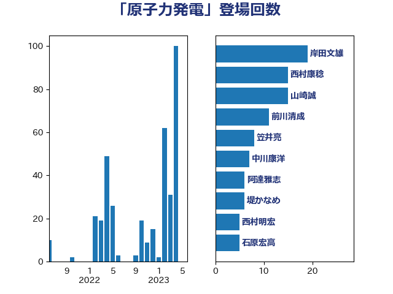

単語「原子力発電」

| 岸田文雄 | 自由民主党 | 19 回 |
| 西村康稔 | 自由民主党 | 15 回 |
| 山崎誠 | 立憲民主党 | 15 回 |
| 前川清成 | 日本維新の会 | 11 回 |
| 笠井亮 | 日本共産党 | 8 回 |
| 中川康洋 | 公明党 | 7 回 |
| 阿達雅志 | 自由民主党 | 6 回 |
| 堤かなめ | 立憲民主党 | 6 回 |
| 西村明宏 | 自由民主党 | 5 回 |
| 石原宏高 | 自由民主党 | 5 回 |
| 枝野幸男 | 立憲民主党 | 5 回 |
| 岩渕友 | 日本共産党 | 5 回 |
| 大島敦 | 立憲民主党 | 5 回 |
| 金子恵美 | 立憲民主党 | 4 回 |
| 舩後靖彦 | れいわ新選組 | 4 回 |
| 竹詰仁 | 国民民主党 | 4 回 |
| 泉健太 | 立憲民主党 | 4 回 |
| 山口壯 | 自由民主党 | 4 回 |
| 小野泰輔 | 日本維新の会 | 4 回 |
| 宮口治子 | 立憲民主党 | 4 回 |
| 古川康 | 自由民主党 | 4 回 |
| 音喜多駿 | 日本維新の会 | 3 回 |
| 萩生田光一 | 自由民主党 | 3 回 |
| 荒井優 | 立憲民主党 | 3 回 |
| 空本誠喜 | 日本維新の会 | 3 回 |
| 神田潤一 | 自由民主党 | 3 回 |
| 石井章 | 日本維新の会 | 3 回 |
| 浜野喜史 | 国民民主党 | 3 回 |
| 村田享子 | 立憲民主党 | 3 回 |
| 平林晃 | 公明党 | 3 回 |
| 岩田和親 | 自由民主党 | 3 回 |
| 山添拓 | 日本共産党 | 3 回 |
| 大岡敏孝 | 自由民主党 | 3 回 |
| 中野洋昌 | 公明党 | 3 回 |
| 阿部知子 | 立憲民主党 | 2 回 |
| 鈴木敦 | 国民民主党 | 2 回 |
| 細田健一 | 自由民主党 | 2 回 |
| 神谷政幸 | 自由民主党 | 2 回 |
| 河野義博 | 公明党 | 2 回 |
| 梶山弘志 | 自由民主党 | 2 回 |
| 平山佐知子 | 無所属 | 2 回 |
| 市村浩一郎 | 日本維新の会 | 2 回 |
| 岸真紀子 | 立憲民主党 | 2 回 |
| 寺田静 | 無所属 | 2 回 |
| 太田房江 | 自由民主党 | 2 回 |
| 吉良州司 | 無所属 | 2 回 |
| 三浦靖 | 自由民主党 | 2 回 |
| 鬼木誠 | 立憲民主党 | 1 回 |
| 高木真理 | 立憲民主党 | 1 回 |
| 馬場雄基 | 立憲民主党 | 1 回 |
| 長峯誠 | 自由民主党 | 1 回 |
| 長坂康正 | 自由民主党 | 1 回 |
| 鈴木義弘 | 国民民主党 | 1 回 |
| 遠藤良太 | 日本維新の会 | 1 回 |
| 逢坂誠二 | 立憲民主党 | 1 回 |
| 近藤昭一 | 立憲民主党 | 1 回 |
| 西村智奈美 | 立憲民主党 | 1 回 |
| 藤木眞也 | 自由民主党 | 1 回 |
| 藤巻健太 | 日本維新の会 | 1 回 |
| 蓮舫 | 立憲民主党 | 1 回 |
| 米山隆一 | 立憲民主党 | 1 回 |
| 穂坂泰 | 自由民主党 | 1 回 |
| 福田昭夫 | 立憲民主党 | 1 回 |
| 田村まみ | 国民民主党 | 1 回 |
| 田嶋要 | 立憲民主党 | 1 回 |
| 玉木雄一郎 | 国民民主党 | 1 回 |
| 片山大介 | 日本維新の会 | 1 回 |
| 櫻井周 | 立憲民主党 | 1 回 |
| 森本真治 | 立憲民主党 | 1 回 |
| 梅村聡 | 日本維新の会 | 1 回 |
| 松野博一 | 自由民主党 | 1 回 |
| 杉田水脈 | 自由民主党 | 1 回 |
| 平木大作 | 公明党 | 1 回 |
| 山本剛正 | 日本維新の会 | 1 回 |
| 山岡達丸 | 立憲民主党 | 1 回 |
| 小沼巧 | 立憲民主党 | 1 回 |
| 小林一大 | 自由民主党 | 1 回 |
| 宮沢洋一 | 自由民主党 | 1 回 |
| 宗清皇一 | 自由民主党 | 1 回 |
| 塩田博昭 | 公明党 | 1 回 |
| 堀場幸子 | 日本維新の会 | 1 回 |
| 和田有一朗 | 日本維新の会 | 1 回 |
| 北村経夫 | 自由民主党 | 1 回 |
| 伊藤孝恵 | 国民民主党 | 1 回 |
| 中谷真一 | 自由民主党 | 1 回 |
| 三浦信祐 | 公明党 | 1 回 |
| 一谷勇一郎 | 日本維新の会 | 1 回 |